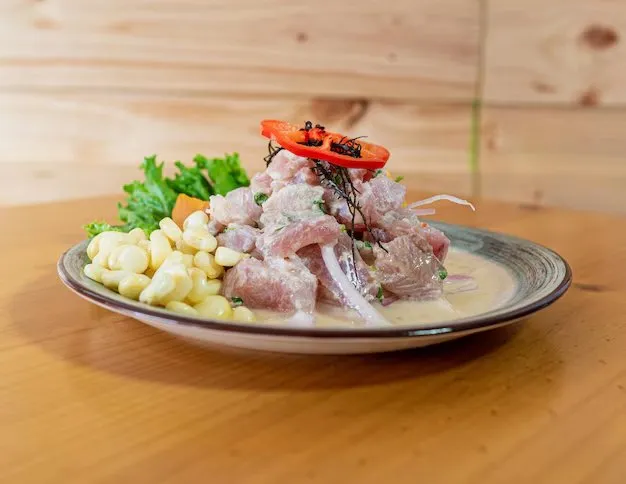
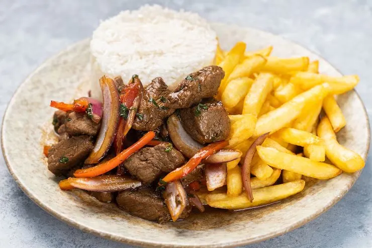
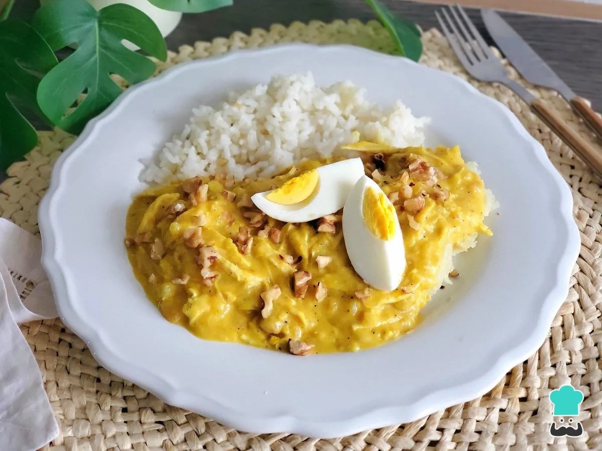
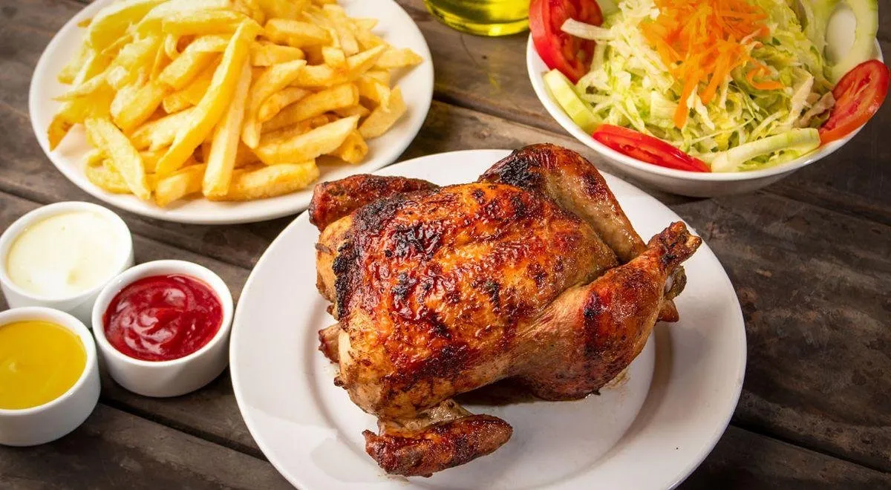
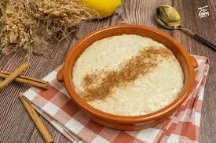

Los platos más amados de nuestra gastronomía

El plato más emblemático del Perú. Pescado fresco marinado en limón, con cebolla, ají y cilantro. Declarado Patrimonio Cultural de la Nación.
Plato Nacional
Salteado de carne, tomate y cebolla con papas fritas y arroz. Una fusión perfecta entre la cocina peruana y la influencia china.
Fusión Chifa
Pollo desmenuzado en salsa cremosa de ají amarillo, pan y nueces. Un plato tradicional lleno de sabor y color.
Tradicional
El favorito de todos. Pollo marinado y cocinado a las brasas con papas fritas. Tiene su propio día nacional el tercer domingo de julio.
Favorito Nacional
Postre tradicional peruano hecho con arroz, leche, canela y coco. El postre más querido en los hogares peruanos.
Postre ClásicoDatos que quizás no sabías de nuestra gastronomía
Lima fue elegida como el Mejor Destino Culinario del Mundo por más de 10 años consecutivos.
El Perú tiene más de 300 variedades de ají. Es el ingrediente más usado en la gastronomía peruana.
El Perú es el origen de la papa. Existen más de 3,000 variedades de papa en el país.
La cocina peruana es una mezcla de culturas: andina, española, africana, china y japonesa.
Cada región del Perú tiene su sabor único
| Región | Plato Típico | Ingrediente Principal |
|---|---|---|
| 🌊 Costa | Ceviche | Pescado fresco |
| ⛰️ Sierra | Pachamanca | Carnes y papas |
| 🌿 Selva | Juane | Arroz y gallina |
| 🏙️ Lima | Lomo Saltado | Carne de res |
| 🌄 Arequipa | Rocoto Relleno | Rocoto y carne |
¿Tienes alguna sugerencia o comentario?